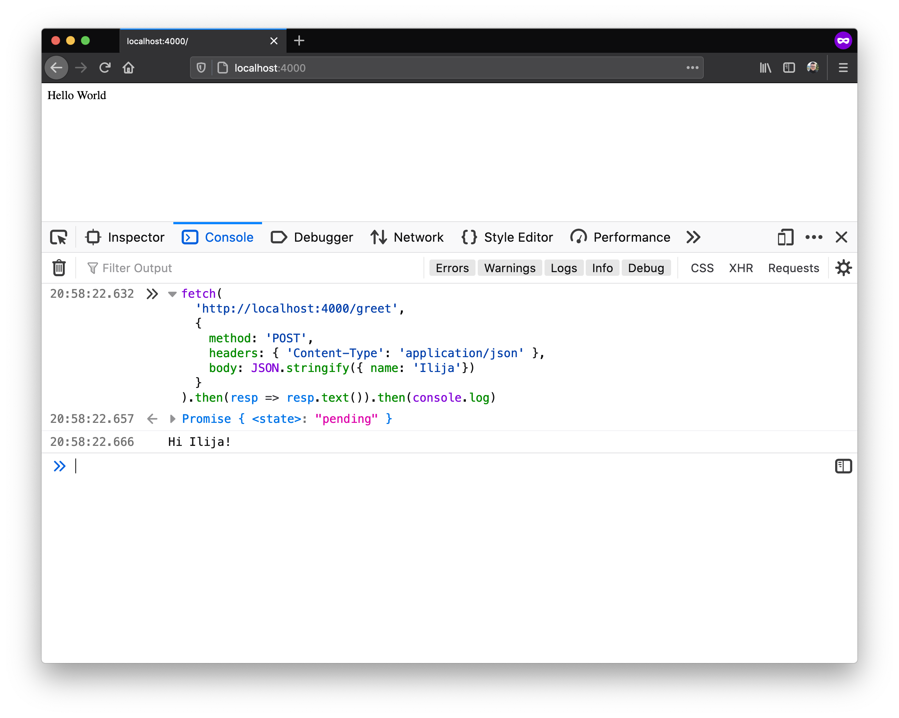
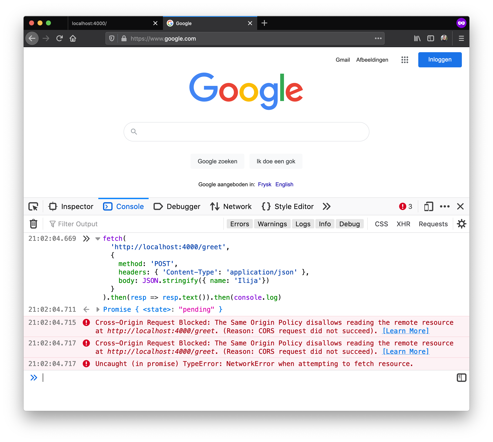
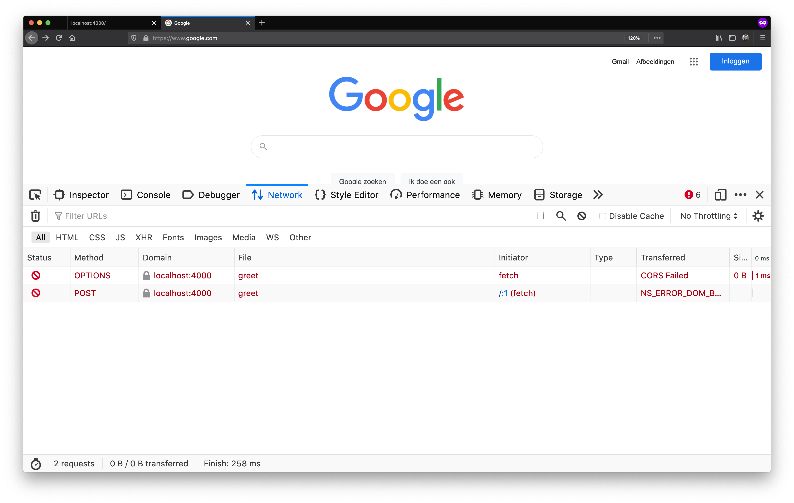
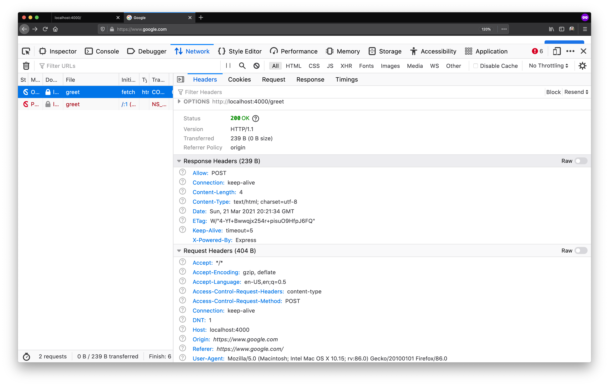
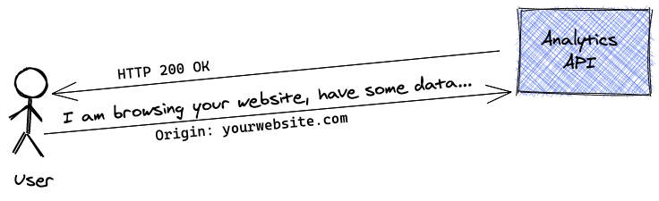
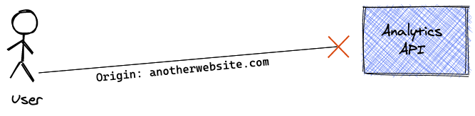

在F12中的console模式下看CORS
后端springboot代码
1
2
3
4
5
6
7
8
9
public String delete( String name) {
return "hello"+name;
}
public String delete(){
return "hello";
}Console中代码
1
2
3
4
5
6
7fetch(
'http://localhost:8080/greet/yawen',
{
method: 'POST',
headers: { 'Content-Type': 'text/plain' },
}
).then(resp => resp.text()).then(console.log)

preflight request


跨域请求中，浏览器会发出两个请求，一个是OPTION请求，另一个是POST请求。在OPTIONS请求中，状态码为200，但是请求依然不成功（报红)说明，浏览器没有拦截request请求，拦截的是response响应。
这是浏览器的预检请求
浏览器会对CORS认为复杂的请求执行预检请求，有如下标准:
- 除了GET,POST,HEAD方法
- 除了headers中的Accept,Accept-Language,Content-Language
- 除了Content-Type: text/plain,multipart/form-data (application/json会执行OPTION预检)
如何避免预检
- 此方法可以不执行预检，但是依然避免不了post请求.通过如下操作可以继续避免post请求，从而实现跨域请求.
1
2
3
4
5
6
7
8
9
10
11
12fetch(
'http://localhost:4000/greet',
{
method: 'POST',
headers: {
'Content-Type': 'text/plain'
},
body: 'Ilija'
}
)
.then(resp => resp.text())
.then(console.log)
1 | options "/greet" do |env| |
Best Practice
仅仅只允许yourwebsite.com发送request


在某些情况下，需要对网站进行分析，这时，就需要浏览器发送有关用户在该网站上的体验的数据给后台，但是，却又不希望所有的站点都能够通过该后台的API来发送无关的数据，此时，后台中的代码,Access-Control-Allow-Origin:yourwebsite.com，通过该设置就可以只获取该网站发送来的数据了.